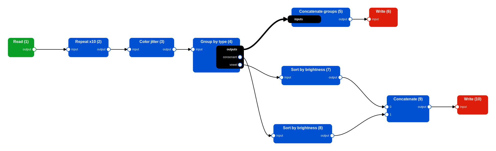
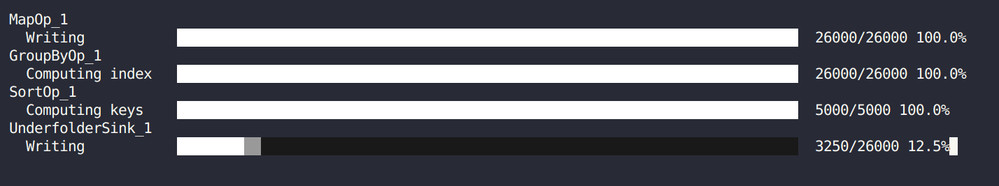

♻️ Workflows
Overwiew
So far in this tutorial we always focused on simple cases where we only needed to apply a single operation to our data, with the only exception of a few cache-related examples where we saw the interactions and side-effects of two lazy operations applied sequentially.
While applying a single operation to your data may be useful in some situations, more often than not you will need to apply multiple operations in a repeatable and organized way. One way of doing this is to write a python script that calls the right operations in the right order and that's it, but with a little extra effort you can turn your script into a Pipewine Workflow: a Directed Acyclic Graph (DAG) where nodes represent Actions (either a source, operator or sinks) and edges represent the dependencies between them.
When using Pipewine workflows, you have the following advantages:
- Pipewine can automatically draw a 2D representation of your workflow to help you (and others) understand what it does without reading your code.
- Pipewine automatically attaches callbacks to all operations to track the progress of your workflow while it's running. Progress updates can be visualized live in a TUI (Text-based User Interface) to monitor the progress of long workflows.
- The code is transformed into a data structure that can be inspected before running it.
- Pipewine can inject logic into your code (e.g. caches or checkpoints) without you having to write them manually.
Example Workflow
Instead of going through every single workflow component, we will instead focus on how to create and run workflows at a higher level, with an example use case where we perform some operations to augment and rearrange the same old dataset with letters.
Here is a summary of all the operations we want to perform in our example DAG:
- Read a "Letter" dataset - used many times as an example toy dataset in this tutorial.
- Repeat the dataset 10 times.
- Apply random color jitter to each sample.
- Group letters by their type (either 'vowel' or 'consonant').
- Concatenate the two (vowels and consonants) splits into a single dataset.
- Write the dataset (A).
- Sort the vowels by average color brightness.
- Sort the consonants by average color brightness.
- Contatenate the sorted splits into a single dataset.
- Write the dataset (B).
A graphical representation of the operations involved in the workflow (this image was generated using a Pipewine utility to draw workflows). 
We start by defining the schema of our data, in this case it's the same as the one used previously in this tutorial:
class LetterMetadata(pydantic.BaseModel):
letter: str
color: str
class SharedMetadata(pydantic.BaseModel):
vowels: list[str]
consonants: list[str]
class LetterSample(TypedSample):
image: Item[np.ndarray]
metadata: Item[LetterMetadata]
shared: Item[SharedMetadata]
Some steps of our workflow need a custom implementation, or are simply not provided by Pipewine, namely:
- The mapper that applies random color jittering (very rudimental):
class ColorJitter(Mapper[LetterSample, LetterSample]): def __call__(self, idx: int, x: LetterSample) -> LetterSample: image = x.image() col = np.random.randint(0, 255, (1, 1, 3)) alpha = np.random.uniform(0.1, 0.9, []) image = (image * alpha + col * (1 - alpha)).clip(0, 255).astype(np.uint8) return x.with_values(image=image) - The group-by function that separates vowels from consonants:
- The sort function needed to sort samples by image brightness:
- An operation to concatenate all datasets in a dictionary of datasets. Needed because
CatOpaccepts a sequence of datasets, not a mapping.
Let's pretend we don't know anything about workflows and just write some Python code to apply the operations in the correct order:
# Input, outputs, grabber
input_folder: Path("tests/sample_data/underfolders/underfolder_0")
output_a: Path("/tmp/out_a")
output_b: Path("/tmp/out_b")
grabber = Grabber(8, 50)
# (1) Read the data
data = UnderfolderSource(input_folder, sample_type=LetterSample)()
# (2) Repeat the dataset 10 times
data = RepeatOp(10)(data)
# (3) Apply random color jitter
# We need a checkpoint after this operation to avoid recomputing a random function!
data = MapOp(ColorJitter())(data)
UnderfolderSink(ckpt_path := Path("/tmp/checkpoint"), grabber=grabber)
data = UnderfolderSource(ckpt_path, sample_type=LetterSample)()
# (4) Group letters by their type
groups = GroupByOp(group_fn)(data)
# (5) Concatenate the two types
data = GroupCat()(groups)
# (6) Write the dataset A
UnderfolderSink(out_a, grabber=grabber)(data)
# (7, 8) Sort the two splits by average color brightness
vowels = SortOp(sort_fn)(groups["vowel"])
consonants = SortOp(sort_fn)(groups["consonant"])
# (9) Concatenate the sorted splits
data = CatOp()([vowels, consonants])
# (10) Write the dataset B
UnderfolderSink(out_b, grabber=grabber)(data)
Now, let's re-write our code using workflows, by applying the following changes:
- Create an empty
Workflowobject namedwfat the beginning of our code. - Wrap each action call using
wf.node(). - Call the
run_workflowfunction at the end of our code.
# Input, outputs, grabber
input_folder: Path("tests/sample_data/underfolders/underfolder_0")
output_a: Path("/tmp/out_a")
output_b: Path("/tmp/out_b")
grabber = Grabber(8, 50)
# Create the worfklow object
wf = Workflow(WfOptions(checkpoint_grabber=grabber))
# (1) Read the data
data = wf.node(UnderfolderSource(input_folder, sample_type=LetterSample))()
# (2) Repeat the dataset 10 times
data = wf.node(RepeatOp(10))(data)
# (3) Apply random color jitter (with checkpointing)
data = wf.node(MapOp(ColorJitter()), options=WfOptions(checkpoint=True))(data)
# (4) Group letters by their type
groups = wf.node(GroupByOp(group_fn))(data)
# (5) Concatenate the two types
data = wf.node(GroupCat())(groups)
# (6) Write the dataset A
wf.node(UnderfolderSink(out_a, grabber=grabber))(data)
# (7, 8) Sort the two splits by average color brightness
vowels = wf.node(SortOp(sort_fn))(groups["vowel"])
consonants = wf.node(SortOp(sort_fn))(groups["consonant"])
# (9) Concatenate the sorted splits
data = wf.node(CatOp())([vowels, consonants])
# (10) Write the dataset B
wf.node(UnderfolderSink(out_b, grabber=grabber))(data)
# Run the workflow
run_workflow(wf)
This code is very similar to the previous and it behaves the same way if executed. What changed is that instead of being executed as soon as operators are called, they are first converted into a DAG, then executed upon calling the run_workflow function. Nothing is done until the last line of code.
Workflow Creation
Workflow objects can be created by simply calling the Workflow() constructor. However, you can customize some aspects of your workflow by customizing the workflow options.
Workflow options are contained into the WfOptions class and currently include some settings to add a cache or a checkpoint after the operation, automatically collect garbage after an operation completes etc... You can find all details in the API reference.
All of these options do not provide a default value, but instead default to an object Default, which is simply a marker that acts as a sentinel. The reason behind this is that you can use WfOptions at the moment in which the workflow is created, but also when adding individual nodes. In these cases, the options of a node always override the ones of the workflow.
The true default values of the workflow options is instead specific of the WorkflowExecutor, a component (detailed later) that is responsible for scheduling and executing the pipeline.
The order in which the option values are resolved is as follows:
- The value specified in the node options, if not
Default. - The value specified in the workflow options, if not
Default. - The default value for this
WorkflowExecutor.
This is useful because if we want to always write a checkpoint after executing a node, except for a few places, we can write less code by setting checkpoint=True in the workflow options and then setting it to false for the one or two nodes that don't need it.
Workflow Components
As demonstrated in the previous example, nothing really happens until the run_workflow function is called, despite our code looking pretty much the same as the example without workflows, but how does that happen in practice?
When calling the node() method, the action (source, sink or operation) that is passed as first argument is memorized in a data structure inside the Workflow object and a mocked version of it is returned. This mocked version retains exactly the same interface as the true version, but when called it will only record that the operation needs to be called with the given inputs, without actually executing it.
Inputs and outputs accepted and returned by the mocked actions are not actual datasets, but only Proxy objects whose only purpose is to serve as a placeholder to create new connections when a new action is called. As actions can accept/return a dataset, a sequence, a tuple, a mapping or a bundle of datasets, mocked actions accept/return proxies for every type of data.
Failure
With proxies you cannot do the things you would normally do with the actual outputs of an node. E.g. accessing a sample of a proxy dataset, or trying to get its length will raise an error.
The dataset is not actually been computed yet, there is no way to know its length in advance!
Complete list of things that can or cannot be done with proxies:
-
Proxy
Dataset:- ❌ Getting the length using
__len__. - ❌ Accessing a sample or a slice using
__getitem__. - ❌ Iterate through it using
__iter__. - ✅ Pass it to another node of the workflow, either directly or through a list/tuple/mapping/bundle.
- ❌ Getting the length using
-
Proxy
Sequence[Dataset]ortuple[Dataset, ...]where the number of elements is not statically known:- ❌ Getting the length using
__len__. - ✅ Accessing an element using
__getitem__. In this case a proxy dataset will be returned. - ❌ Extracting a slice using
__getitem__. - ❌ Iterate through it using
__iter__. - ✅ Pass it to another node of the workflow.
- ❌ Getting the length using
-
Proxy
tuple[Dataset]where the number of elements is statically known:- ✅ Getting the length using
__len__. - ✅ Accessing an element or a slice using
__getitem__. In this case a proxy dataset or a tuple of proxy datasets will be returned. - ✅ Iterate through it using
__iter__. - ✅ Pass it to another node of the workflow.
- ✅ Getting the length using
-
Proxy
Mapping[str, Dataset]:- ❌ getting the length using
__len__. - ✅ Accessing an element using
__getitem__. In this case a proxy dataset will be returned. - ❌ Iterate through keys, values or items using
keys(),values(),items()or__iter__. - ❌ Determine whether the mapping contains a given key.
- ✅ Pass it to another node of the workflow.
- ❌ getting the length using
-
Proxy
Bundle[Dataset]:- ✅ Accessing an element using the
__getattr__(dot notation). In this case a proxy dataset will be returned. - ✅ Convert it to a regular dictionary of proxy datasets with the
as_dict()method. - ✅ Pass it to another node of the workflow.
- ✅ Accessing an element using the
Important
As you can see, there are many limitations to what can be done with these proxy objects and this may seem like a huge limitation.
In reality, these limitations only apply during the workflow definition phase: nothing prevents you from accessing the real length of a list of datasets inside a node of the workflow.
These limitations are only apparent. Think about it: you must execute the workflow to get its results, and to execute it you must first construct it. It would not make any sense if in order to construct the workflow we would first need to take decisions based on its results, that would be a circular definition!
Furthermore, while Pipewine makes these limitations apparent, they are not something new. In fact, even with the old Pipelime, you cannot take decision on the outputs of nodes before executing a DAG. A typical example of this is when splitting a dataset: you must know in advance the number of splits in order to use them in a DAG.
Pipewine actually has less limitations in that regard, because lists (or mappings) of datasets can be passed as-is to other nodes of the workflow, even if their length and content is completely unknown, this was not possible using Pipelime DAGs.
Tip
If you ever need to know the result of a workflow in order to construct it, it may help to:
- Statically define certain aspects of the workflow using constants: e.g. if you know in advance the length of a list of datasets as a constant, it makes no sense to compute it using
__len__, use the constant value instead. - Restructure your code, maybe you are giving a responsibility to the workflow that should be given to one or more
DatasetOperator. - As a last resort, avoid using a workflow and instead use a plain python function.
Workflow Execution
Workflows on their own do not do much: they only consist of the graph data structure that, plus some methods to conveniently add new nodes and edges or to inspect them.
To execute a workflow you need a WorkflowExecutor, an object whose main responsibility is running the actions contained in the Workflow object on the correct data inputs and in the correct order. It also manages caches, checkpoints, cleanup and sends events to whoever is listening.
The only implementation provided (so far) by Pipewine is a very naive executor that simply topologically sorts the workflow and runs each action sequentially, hence the name SequentialWorkflowExecutor.
Using it is very simple: you just have to construct the executor and pass your workflow to the execute method:
More conveniently, you can simply call the run_workflow function that does something similar under the hood. If not specified, the workflow executor will default to a new instance of SequentialWorkflowExecutor, to spare you the need to construct it and call it explicitly.
Worfklow Progress Tracking
Each node of the workflow, which corresponds to an action, can start zero or more tasks. By "task" we mean a finite, ordered collection of units of work that are executed in a single call to an action.
Example
In the GroupByOp, an operator that splits the input dataset into many parts that have in common a specific key, we need to iterate over the input dataset and retrieve the value associated to the group-by key. This is a task:
- It starts after the
GroupByOpis called. - It has a number of units equal to the length of the input dataset.
- The i-th unit corresponds to the computation of the group-by key in the i-th sample.
- It finishes before the
GroupByOpreturns.
Note
Lazy operators do not typically create tasks when called.
Tip
The self.loop() method of a Pipewine action will automatically invoke callbacks to start, update and finish a new task each time it is called.
If a Grabber is used (to speed up computation through parallelism), all worker sub-processes will be configured to automatically emit events each time they complete a unit of work.
Workflow executors can be attached to an EventQueue, a FIFO queue that collects any progress update event from the executor and lets whoever is listening to it, typically a Tracker, receive these updates in the correct order.
EventQueue objects are designed so that the same queue can receive updates from many emitters, possibly located on different processes. This is crucial to enable progress tracking when using a Grabber. The only EventQueue implementation provided so far by Pipewine is the ProcessSharedEventQueue, built on top of a multiprocessing.Pipe object.
Tracker objects are instead consumers of progress update events. They constantly listen for new updates and display them somewhere. The only Tracker implementation provided by Pipewine is CursesTracker, that conveniently displays progress updates in a ncurses TUI (Text-based User Interface) for immediate reading.
To connect all these things together, you need to do the following things:
- Construct and populate a
Workflow. - Construct a
WorkflowExecutor. - Construct a
EventQueue. - Construct a
Tracker. - Call the
start()method of theEventQueue. - Attach the executor to the running event queue.
- Attach the tracker to the running event queue.
- Execute the workflow.
- Detach the executor from the event queue.
- Detach the tracker from the event queue.
- Close the event queue.
# Workflows and other components
workflow: Workflow
executor = SequentialWorkflowExecutor()
event_queue = ProcessSharedEventQueue()
tracker = CursesTracker()
# Setup
event_queue.start()
executor.attach(event_queue)
tracker.attach(event_queue)
# Execution
executor.run(workflow)
# Teardown
executor.detach()
tracker.detach()
event_queue.close()
This is kind of complicated right? To simplify things a bit on your side, the run_workflow function does all this complicated stuff for you. Equivalently to the code above:

Workflow Drawing
Workflows can be drawn using the draw_workflow function:
Under the hood, this function calls two different components:
Layout: responsible for determining the position and size of workflow nodes in a 2D image plane.Drawer: responsible for taking an already laid out workflow and writing a file that can be visualized by external software such as a web browser or an image viewer.
As for the layout part, Pipewine provides OptimizedLayout, a class that attempts to position the nodes on a 2D grid such that the overall flow can be read from left to right such that:
- Nodes are not too much spread out, nor too close to each other.
- Excessively long edges are penalized.
- Edge-edge intersections are minimized.
- Edge-node intersections are minimized.
- Edges are directed towards the right side of the image.
This is achieved using a very simple evolutionary approach. The implementation is kind of difficult to follow due to heavy use of vectorization to eliminate all Python for loops and control flow, crucial to ensure acceptable performance (<1000ms execution time).
SVGDrawer takes the laid-out graph and writes it into a SVG file that can be opened in any modern web browser and embedded pretty much everywhere.